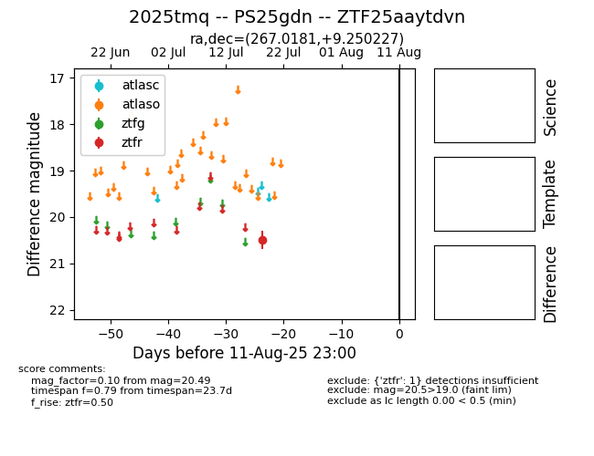

Target 2025tmq at 2025-08-11 23:00, see:
FINK: fink-portal.org/2025tmq
Lasair: lasair-ztf.lsst.ac.uk/objects/2025tmq
ALeRCE: alerce.online/object/2025tmq
TNS: wis-tns.org/object/2025tmq
YSE: ziggy.ucolick.org/yse/transient_detail/2025tmq
alt names
ZTF25aaytdvn (ztf,fink)
2025tmq (tns,yse)
PS25gdn (panstarrs)
coordinates:
equatorial (ra, dec) = (267.0181,+9.25023)
galactic (l, b) = (34.1512,+18.24516)
photometry
last ztfr=20.49
1 ztfr detections
